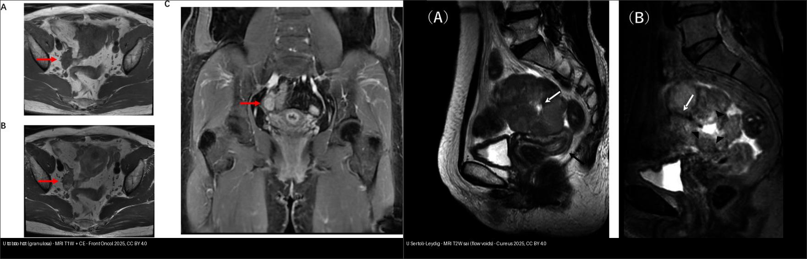
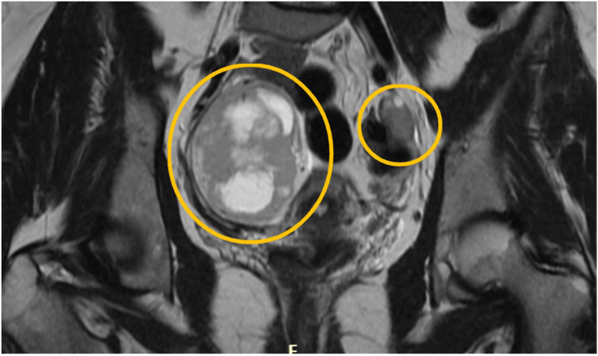
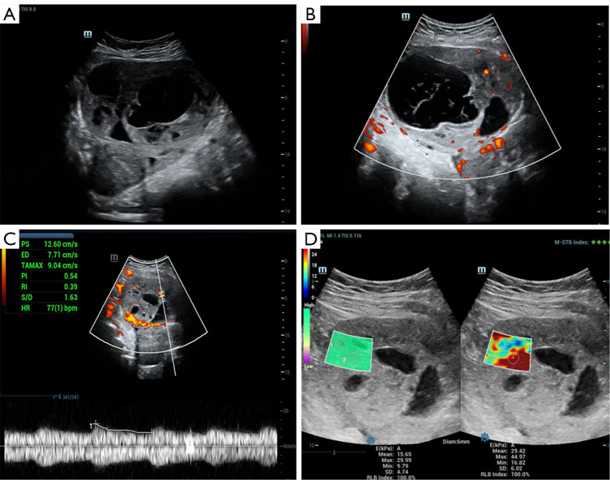
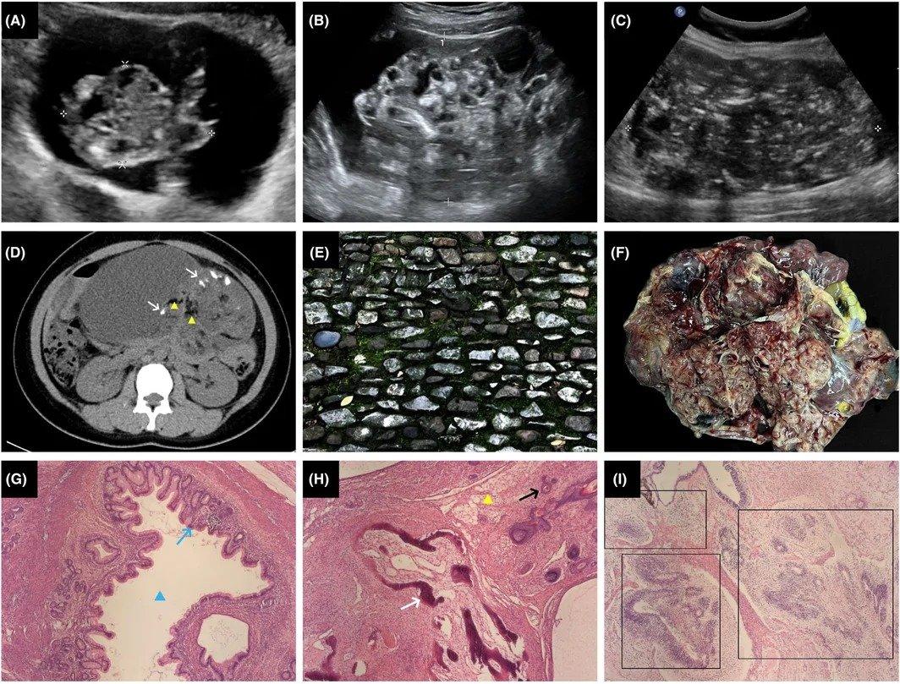
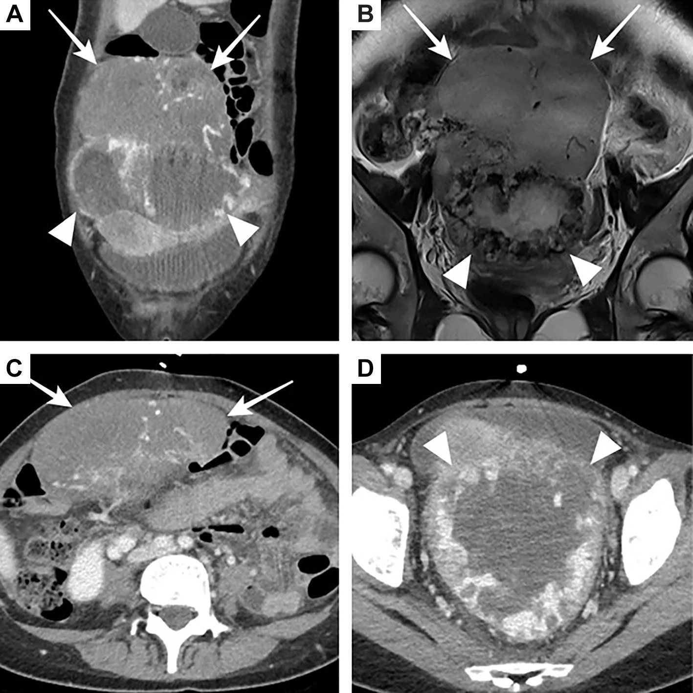
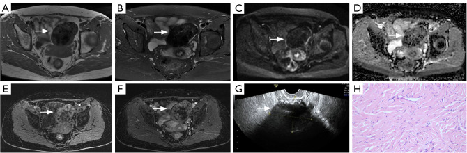

536 — U mầm & u mô đệm–dây sinh dục buồng trứng / Ovarian germ cell & sex cord–stromal tumours
Tags: pattern:u-buong-trung vung:buong-trung score:FIGO protocol:MRI-chau protocol:CT-chau
Mức chắc chắn (certainty): tổng hợp y văn (literature synthesis) — nhóm tự biên từ y văn mở (Europe PMC/PMC, Cancers, Insights) + các ca minh họa có giấy phép; không phải ca nguyên văn đơn lẻ.
1. Tổng quan — hai họ u "KHÔNG biểu mô" của người trẻ + cơ chế hình ảnh
- Bối cảnh: ung thư buồng trứng biểu mô (epithelial) chiếm ~90% và gặp ở tuổi quanh mãn kinh (bài
535). Ở người trẻ, khối phần phụ đặc–hỗn hợp thường thuộc 2 họ khác hẳn: u mầm (germ cell tumour — GCT) và u mô đệm–dây sinh dục (sex cord–stromal tumour — SCST). Chúng khác nguồn gốc tế bào, khác dấu ấn huyết thanh (tumour marker) và khác đường điều trị (bảo tồn sinh sản) — nên chẩn đoán hình ảnh đúng đổi cả phác đồ. - Dịch tễ (định lượng): u mầm ác tính (malignant ovarian germ cell tumour — MOGCT) chỉ chiếm 2–3% toàn bộ u ác buồng trứng, nhưng 58% xảy ra < 20 tuổi và 82% chẩn đoán từ 14–54 tuổi (tuổi sinh sản); tỉ lệ
0,4/100.000/năm ở châu Âu. U quái trưởng thành (mature teratoma) chiếm **69%** u mầm buồng trứng (phần lớn lành); nhóm ác: u sinh dục bào (dysgerminoma) hay gặp nhất (~30–40% MOGCT), u túi noãn hoàng (yolk sac tumour) ~15%, u quái chưa trưởng thành (immature teratoma — IT) ~1/3 các MOGCT không phải dysgerminoma (tuổi 15–30, tỉ lệ ~1,5/100.000 nữ). SCST chiếm 5–8% u buồng trứng, phần lớn lành; ác điển hình là u tế bào hạt (granulosa cell tumour — OGCT) và u Sertoli–Leydig (SLCT). - TẠI SAO hình ảnh khác nhau — giải thích theo mô học/vật lý:
- Dysgerminoma: khối đặc, lớn, đồng nhất như "bánh mì", tế bào lớn bào tương sáng xếp ổ + vách xơ–mạch (fibrovascular septa). Vách này giàu mạch → T2W vách tối (xơ) nhưng T1 sau tiêm vách ngấm mạnh; u đặc tế bào → DWI sáng + ADC thấp. Vôi hóa thô ~10–15%. Hai bên ~10–15%. Vì sao vách tối T2 mà ngấm: sợi collagen ít nước (T2 tối) nhưng chứa mạch nuôi (ngấm).
- U túi noãn hoàng (yolk sac tumour): tiết AFP; mô đặc–nang, xuất huyết + hoại tử + vách mảnh → khối hỗn hợp thùy, dịch trong nang. Vì sao hỗn hợp: u tăng sinh nhanh vượt cấp máu → hoại tử trung tâm + xuất huyết.
- U quái chưa trưởng thành (immature teratoma): chứa cả 3 lá phôi → trong CÙNG một khối có mỡ (−40 đến −120 HU) + vôi hóa (răng/xương — cản quang cao) + mô đặc (thần kinh non); phân độ 1–3 theo lượng mô thần kinh non (Scully/Thurlbeck). TẠI SAO có mỡ: biệt hóa mô mỡ; TẠI SAO có vôi: mô răng/xương biệt hóa.
- OGCT (u tế bào hạt): tiết estrogen + inhibin → khối đặc–nang xuất huyết, "pho mát Thụy Sĩ" (nhiều nang nhỏ), T1 có ổ sáng do máu; tử cung to + JZ rõ (tác dụng estrogen). TẠI SAO xuất huyết: mạng mạch giãn, dễ vỡ.
- SLCT: tiết androgen (nam hóa) → khối T2 trung tính, nhiều khe mạch (flow voids), DWI sáng + ADC thấp, KHÔNG mỡ/xuất huyết.
- U sợi–vỏ (fibroma/thecoma): mô xơ đặc, nghèo tế bào → T1/T2 tối đen, rất ít ngấm, ADC thấp; là nút "đặc tối T2" của gamut (O-RADS MRI 2).
- Ngưỡng định lượng cho điểm (QIMS 2025, n=71): ADC trung bình OGCT ~0,86 ×10⁻³ mm²/s; fibroma ~1,20 ×10⁻³ mm²/s (ví dụ ổ xuất huyết OGCT 0,365; fibroma 0,757). AFP: trong IT có thể tăng tới ~50% ca; ổ yolk sac > 3 mm trong IT làm tăng nguy cơ tái phát. Tiên lượng IT theo FIGO: I/II > 95% sống; III 81%; IV 71%.
- Vì sao quan trọng: nhóm này gặp ở người trẻ → mục tiêu là bảo tồn sinh sản (unilateral salpingo-oophorectomy + staging) và đa số chữa khỏi bằng BEP nếu đúng phác đồ — ngược hẳn thái độ "ung thư buồng trứng tuổi già".
2. Mẫu hình + chẩn đoán phân biệt theo tuổi, bên tổn thương & nội dung khối (Gamut)
- Theo tuổi: < 20 tuổi** → GCT/SCST gần như luôn là chẩn đoán hàng đầu; **> 40 tuổi → chuyển dần sang u biểu mô (
535). Tuổi là bộ lọc đầu tiên. - Theo bên tổn thương: một bên → GCT (dysgerminoma, IT, yolk sac) hoặc SCST; hai bên → dysgerminoma (~10–15%), di căn Krukenberg (
535), lymphoma, hoặc u ở buồng trứng lạc chỗ/hội chứng tăng sinh dây sinh dục. - Theo nội dung khối (4 khuôn):
- Đặc–đồng nhất, vách ngấm: dysgerminoma.
- Mỡ ± vôi hóa trong khối: u quái (phân biệt trưởng thành vs chưa trưởng thành bằng mô học + AFP).
- Đặc–nang xuất huyết nhiều: yolk sac, OGCT, embryonal carcinoma.
- Đặc tối T2, ít ngấm: fibroma/thecoma (nút lành).
- Theo hormone: cường estrogen (OGCT, thecoma — dậy thì sớm, xuất huyết tử cung) vs nam hóa (virilization — SLCT).
- Mimic cần loại: xoắn buồng trứng (
530— đau cấp, dấu xoáy), u quái trưởng thành lành (mỡ + tóc, không mô thần kinh non), di căn (Krukenberg), lao phần phụ.
3. Bảng so sánh phân biệt (ma trận đối chiếu)
| Thực thể (entity) | Hình ảnh điển hình (US/CT/MRI) | Chốt vào (rule-in) | Chốt loại (rule-out) | Gợi ý xác nhận |
|---|---|---|---|---|
| U sinh dục bào (dysgerminoma) | Khối đặc–đồng nhất, lớn; vách xơ T2 tối nhưng ngấm mạnh; vôi hóa thô ~10–15%; DWI sáng/ADC thấp | Đặc đồng nhất + vách ngấm + người trẻ (± hai bên) | Mỡ trong khối → không phải dysgerminoma (nghĩ u quái) | LDH ↑, β-hCG ↑ nhẹ (~5–10%); mô học tế bào mầm |
| U túi noãn hoàng (yolk sac) | Khối đặc–nang, xuất huyết–hoại tử, vách mảnh nhiều thùy; US: mạch vỏ/vách, RI < 0,5 | AFP rất cao + khối hỗn hợp xuất huyết, tuổi trẻ | AFP bình thường → ít nghĩ yolk sac | AFP, glypican-3, SALL4 |
| U quái chưa trưởng thành (immature teratoma) | Mỡ + vôi hóa + mô đặc trong một khối; pattern "khảm sỏi" (pebbled mosaic) trên US; biến thiên mạnh | Mỡ + vôi hóa + mô đặc, người 15–30 tuổi | Khối mỡ thuần + không mô thần kinh non → u quái trưởng thành | AFP (↑ tới ~50%), mô học mô thần kinh non (độ 1–3) |
| U tế bào hạt (granulosa/OGCT) | Khối đặc–nang xuất huyết, "pho mát Thụy Sĩ"; T1 có ổ sáng máu; ngấm mạnh; ADC ~0,86 | Xuất huyết + nang nhỏ + tử cung to/JZ rõ (estrogen) | Đặc tối T2, ít ngấm → nghĩ fibroma | Inhibin B ↑, estradiol ↑; Call-Exner (mô học) |
| U Sertoli–Leydig (SLCT) | Khối T2 trung tính + nhiều flow voids (mạch), DWI sáng/ADC thấp; KHÔNG mỡ/xuất huyết | Nam hóa/androgen + mạch máu mạnh ở người trẻ | Có mỡ → nghĩ u quái | Testosterone ↑, DICER1 (di truyền) |
| U sợi–vỏ (fibroma/thecoma) | Đặc T1/T2 tối đen, rất ít ngấm, ADC thấp (~1,20); US giảm âm, không mạch | T2 tối đều + không ngấm (nút lành) | DWI sáng/ngấm mạnh/hoại tử → nghĩ ác | Theo dõi; Meigs (fibroma + báng + tràn dịch màng phổi) |
| Mimic: Krukenberg / di căn | Hai khối đặc, giữ hình buồng trứng, T2 không đồng nhất | Hai bên đối xứng + tiền sử/đồng thời K tiêu hóa | Đơn độc một bên có mỡ/vôi → u mầm | Nội soi tiêu hóa + IHC (535) |

Trái: u tế bào hạt — khối đặc–nang ở phần phụ phải, T1 có ổ tăng tín hiệu do xuất huyết, ngấm rõ. Phải: u Sertoli–Leydig — khối đặc thùy T2 trung tính, phần trung tâm tăng tín hiệu mạnh (dịch), flow voids gợi tăng mạch. Nguồn: Cao & Wang, Front Oncol 2025 & Yamamoto et al., Cureus 2025, CC BY 4.0 (ảnh ghép letterbox).4. Protocol chụp + phân giai đoạn FIGO + bảo tồn sinh sản
- Siêu âm đầu tay (transvaginal + transabdominal, có Doppler): khối đặc–hỗn hợp + tưới máu vỏ/vách → gợi ác; RI < 0,5 là bất thường (ví dụ yolk sac RI 0,39).
- MRI chậu (chuẩn đọc khối phần phụ): T2W 3 mặt phẳng + T1W (tìm mỡ/xuất huyết) + T1W fat-sat + DWI/ADC (b=800–1000) + DCE; phối hợp O-RADS MRI (
530). Đặc điểm "chốt" giữa các họ nằm ở mỡ/vôi (u quái), độ đồng nhất + vách (dysgerminoma), và độ ngấm/ADC (fibroma vs u tế bào). - CT ngực–bụng–chậu có cản quang: phân giai đoạn, tìm di căn phổi/gan/phúc mạc; CT là kênh tốt để bắt mỡ + vôi hóa trong u quái và tổn thương phổi.
- Dấu ấn huyết thanh (bắt buộc trước mổ/hóa trị): AFP, β-hCG, LDH, inhibin B (± CA-125). Cách nhớ: AFP → yolk sac/embryonal/IT; β-hCG → choriocarcinoma/embryonal (dysgerminoma tăng nhẹ); LDH → dysgerminoma; inhibin B/estradiol → OGCT; testosterone → SLCT.
- FIGO: dùng chung hệ với u biểu mô (
535). Phẫu thuật giảm giai đoạn bảo tồn sinh sản (fertility-sparing): cắt tử cung-buồng trứng một bên + phần còn lại giữ, lấy dịch rửa + mạc nối + sinh thiết hạch (bỏ sót nạo hạch hệ thống nếu không cần). - Điều trị: MOGCT → BEP (bleomycin–etoposide–cisplatin) 3–4 chu kỳ; OGCT giai đoạn I → phẫu thuật, giai đoạn cao/nguy cơ → platinum; SLCT → phẫu thuật ± hóa trị; theo dõi tái phát muộn (OGCT có thể tái phát sau nhiều năm → theo dõi lâu dài + inhibin B).
flowchart TD
A[Khối phần phụ ở người trẻ < 40 tuổi] --> B{US: đặc hay hỗn hợp + tưới máu?}
B -->|Đặc tối T2, không mạch| Z[Fibroma/thecoma: O-RADS MRI 2, theo dõi]
B -->|Đặc-hỗn hợp có mạch| C{MRI: có MỠ hoặc VÔI HÓA?}
C -->|Có| D[U quái: AFP + mô học phân độ 1-3]
C -->|Không| E{Một bên hay hai bên + hormone?}
E -->|Đặc đồng nhất, vách ngấm| F[Dysgerminoma: LDH, theo dõi hai bên]
E -->|Xuất huyết-nang + estrogen| G[U tế bào hạt: inhibin B, estradiol]
E -->|Nam hóa + flow voids| H[Sertoli-Leydig: testosterone, DICER1]
E -->|AFP rất cao| I[Yolk sac: AFP, glypican-3]
F --> J[Phẫu thuật bảo tồn sinh sản + phần giai đoạn]
D --> J
G --> J
H --> J
I --> J
J --> K{Ác tính / giai đoạn cao?}
K -->|Có| L["BEP (u mầm) hoặc platinum (SCST ác)"]
K -->|Không| M[Theo dõi: AFP/LDH/inhibin B định kỳ, tái phát muộn]
5. Biến thể bình thường và cạm bẫy
- U quái trưởng thành lành (mature teratoma) vs u quái chưa trưởng thành: cả hai đều có mỡ ± vôi hóa; khác biệt chỉ ở mô học (mô thần kinh non = độ 1–3) và AFP. Mỡ đơn thuần + không mô thần kinh non → lành; đừng hóa trị oan.
- Gliomatosis peritonei: ~25% IT có mảnh ghép phúc mạc mô trưởng thành (độ 0), KHÔNG phải di căn — đừng nâng giai đoạn/mổ rộng oan.
- Fibroma có ADC thấp + T2 tối: đừng nhầm ác (đây là nút lành, O-RADS MRI 2); phân biệt với u tế bào hạt bằng độ ngấm (fibroma rất ít ngấm) và tín hiệu xuất huyết.
- Hội chứng Meigs (fibroma + báng + tràn dịch màng phổi): bộ ba lành tính, dịch tiêu sau khi cắt u; đừng nhầm carcinomatosis (
535). - T2 shine-through: ổ xuất huyết/nang có thể DWI sáng giả do T2 dài — luôn đọc ADC map để xác nhận khuếch tán hạn chế thật.
- Dysgerminoma hai bên: phải soi cả buồng trứng đối diện khi mổ bảo tồn (10–15% hai bên).
- Xoắn buồng trứng (
530) là cấp cứu giả "khối u" — đau cấp + dấu xoáy (whirlpool); đừng chỉ vì thấy khối mà bỏ dấu xoáy.
6. Tự lượng giá — Blind Quiz
Ca 1 — Nữ 16 tuổi, bụng to, khối chậu hai bên trên MRI. Đọc phim.

- Gợi ý: khối lớn hai bên, không rối loạn nội tiết.
- Hỏi: hai vòng vàng khoanh gì? Vì sao hai bên quan trọng? Dấu ấn nào nên xét?
Bấm để hiện đáp án (findings + chẩn đoán)
- Dấu hiệu (findings): hai khối buồng trứng (vòng vàng) trên MRI coronal — khối lớn, đặc–hỗn hợp, tín hiệu không đồng nhất.
- Chẩn đoán (diagnosis): u sinh dục bào (dysgerminoma) hai bên — vì dysgerminoma là u mầm ác hay gặp nhất ở người trẻ và hai bên ~10–15%; cần xét LDH (và β-hCG) trước mổ.
- Nguồn ảnh: Babkova et al., AJOG Glob Rep 2026 Fig. 3, CC BY-NC-ND 4.0 (giữ nguyên bản).
Ca 2 — Bé gái tuổi vị thành niên, khối chậu đặc–nang nhiều vách, AFP tăng. Đọc siêu âm.

- Hỏi: hình "tổ ong" + vách mảnh gợi ý gì? Chỉ số RI 0,39 nói lên điều gì?
Bấm để hiện đáp án (findings + chẩn đoán)
- Dấu hiệu (findings): khối đặc–nang nhiều vách kiểu "tổ ong" (A); mạch tập trung ở vỏ và vách, không có trong phần nang (B); RI 0,39 (< 0,5) và đàn hồi trung bình 29,42 kPa (C, D).
- Chẩn đoán (diagnosis): u túi noãn hoàng (yolk sac tumour) — vì AFP rất cao + khối hỗn hợp xuất huyết–hoại tử nhiều vách ở người trẻ; RI thấp (giảm sức cản) là đặc trưng tưới máu u ác.
- Nguồn ảnh: Ma et al., Quant Imaging Med Surg 2026 Fig. 1, CC BY-NC-ND 4.0 (giữ nguyên bản).
Ca 3 — Bé gái tuổi 15–30, khối buồng trứng có mỡ lẫn vôi hóa. Đọc CT + siêu âm.

- Hỏi: dấu hiệu "khảm sỏi" (pebbled mosaic) là gì? Vì sao khối có cả mỡ lẫn vôi hóa?
Bấm để hiện đáp án (findings + chẩn đoán)
- Dấu hiệu (findings): (A–C) "khảm sỏi" — mô đặc xen nang tạo vân lấm tấm như đường sỏi; (D) CT: vôi hóa tăng đậm (mũi tên trắng) + mỡ giảm đậm (tam giác vàng); (F) đại thể u độ 3 nhiều mỡ–vôi–nang.
- Chẩn đoán (diagnosis): u quái chưa trưởng thành (immature teratoma) — vì chứa cả 3 lá phôi (mô mỡ + răng/xương vôi hóa + mô thần kinh non); AFP có thể tăng tới ~50%; phân độ mô học 1–3 theo lượng mô thần kinh non.
- Nguồn ảnh: Zhang et al., Acta Obstet Gynecol Scand 2026 Fig. 4, CC BY-NC (giữ nguyên bản).
Ca 4 — Nữ 21 tuổi, khối buồng trứng phải đặc–hỗn hợp 2 thành phần. Đọc CT + MRI.

- Hỏi: hai "thành phần" trong khối là gì? Vì sao đọc cả CT lẫn MRI?
Bấm để hiện đáp án (findings + chẩn đoán)
- Dấu hiệu (findings): CT/MRI cho thấy hai thành phần đặc khác tín hiệu trong cùng khối: phần đồng nhất (mũi tên) và phần không đồng nhất (đầu mũi tên); MRI T2 phân biệt rõ mềm hơn.
- Chẩn đoán (diagnosis): u mầm hỗn hợp (mixed germ cell tumour) — phần đồng nhất = dysgerminoma, phần không đồng nhất = choriocarcinoma; nên AFP + β-hCG + LDH định hướng; BEP toàn thân.
- Nguồn ảnh: Lee et al., In Vivo 2026 Fig. 2, CC BY-NC-ND 4.0 (giữ nguyên bản).
Ca 5 — Hai bệnh nhân nữ trẻ, cùng khối phần phụ một bên. Bên nào u tế bào hạt, bên nào Sertoli–Leydig?
- Hỏi: dấu hiệu nào giúp phân biệt hai bên? Bệnh nào gây nam hóa?
Bấm để hiện đáp án (findings + chẩn đoán)
- Trái = u tế bào hạt (granulosa): khối đặc–nang xuất huyết (ổ sáng T1), ngấm rõ, gợi inhibin B/estradiol ↑ (cường estrogen).
- Phải = u Sertoli–Leydig: khối T2 trung tính với flow voids (tăng mạch) và phần trung tâm dịch tăng tín hiệu mạnh, gợi testosterone ↑ (nam hóa/androgen).
- Chốt: thành phần xuất huyết nghiêng về u tế bào hạt; mạch máu mạnh + nam hóa nghiêng về SLCT.
- Nguồn: Cao & Wang, Front Oncol 2025 & Yamamoto et al., Cureus 2025, CC BY 4.0 (ảnh ghép letterbox).
Ca 6 — Nữ 57 tuổi, khối buồng trứng trái đặc, T2 tối đen, rất ít ngấm. Đọc MRI + siêu âm.

- Hỏi: tín hiệu T2 tối đều + DWI tối + không mạch gợi ý gì? Đây là nút lành hay ác trong gamut?
Bấm để hiện đáp án (findings + chẩn đoán)
- Dấu hiệu (findings): khối giảm tín hiệu đều trên T1 và T2 (A, B), DWI giảm tín hiệu (C), ADC trung bình 0,757 ×10⁻³ mm²/s (D), rất ít ngấm (E, F), siêu âm giảm âm và không mạch (G).
- Chẩn đoán (diagnosis): u sợi buồng trứng (fibroma) — nút LÀNH của gamut (O-RADS MRI 2): mô xơ đặc, nghèo tế bào → T2 tối + ít ngấm; nhớ hội chứng Meigs (fibroma + báng + tràn dịch màng phổi).
- Nguồn ảnh: Cheng et al., Quant Imaging Med Surg 2025 Fig. 3, CC BY-NC-ND 4.0 (giữ nguyên bản).
Bài liên quan chéo
- 500 – Tổng quan Vú & Sản phụ khoa
- 530 – Khối phần phụ O-RADS, dermoid & xoắn
- 535 – Ung thư buồng trứng, phúc mạc & u Krukenberg
- 520 – Tử cung: xơ/FIGO/adenomyosis
- 525 – Ung thư nội mạc & cổ tử cung FIGO trên MRI
Ảnh
536_dysgerminoma_MRI_PMC13319679.jpg,536_yolk-sac_US_PMC12971339.jpg,536_immature-teratoma_US_PMC13613180.jpg,536_mixed-GCT_MRI_PMC13531172.jpg,536_granulosa_MRI_PMC12832474.jpg,536_sertoli-leydig_MRI_PMC12256710.jpg,536_granulosa-xh_MRI_PMC12682522.jpg,536_fibroma_MRI_PMC12682522.jpg,536_sertoli-cell_GROSS_PMC13356590.jpg,composite_granulosa-vs-Sertoli-Leydig.jpg. Nguồn + giấy phép từng ảnh trongimages/CREDITS.md.
Không dùng để chẩn đoán độc lập khi chưa có người hướng dẫn.